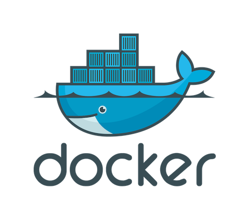
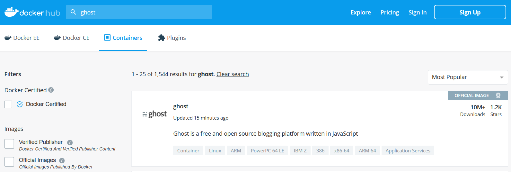

Introduction to Docker
Instructor: Chris Fulton
Learning Objectives
- Understanding what is Docker?
- Images | Containers | Virtual Machines | Containers vs. Virtual Machines
- Practical Use Cases for Web Developers | Containers and Microservices
- Installing Docker
- Docker Desktop | VS Code Plugin | Running Sample Container
- Docker Workflow
- Commonly used Commands
- Docker Hub
- Dockerfile | .dockerignore file
- Containerizing an application
- Using Docker within CI/CD pipeline
- Docker Compose
- Kubernetes and Swarm
What is Docker?
Docker is a set of platform as a service products that uses OS-level virtualization to deliver software in packages called containers.
What is Docker cont.?
Images
is a file, comprised of multiple layers, that is used to execute code in a Docker container. Images are created from a Dockerfile with the docker build command.
Containers
are isolated units of software that packages up code and all its dependencies so the application runs quickly and reliably from one computing environment to another. A runnable instance of an image
Virutal Machines
a virtual machine is an emulation of a computer system. A virtual machine is sandboxed from the rest of the system, meaning that the software inside a virtual machine can’t escape or tamper with the computer itself.
Containers vs. Virtual Machines


Containers and virtual machines have similar resource isolation and allocation benefits, but function differently because containers virtualize the operating system instead of hardware. Containers are more portable and efficient.
Containers and Microservices
What does Microservices have to do with container orchestration? Please watch the video below in your own time. The video provides an overview of microservices and how containers are orchestrated.
Docker Use Cases
Simple Environment Configuration
Simple configuration is the primary use case of Docker
App Isolation & Testing
Cautious of erraneous code can be ran in a contained environment. Testing and previewing new applications. Using Docker Hub to pull down preconfigured applications.
Rapid Deployment and Scaling
Easier to deploy an application that runs within a container that contains all of the application processes
Code Pipeline Management
Docker eases the code development and deployment pipeline and offers a consistent environment for the application from dev through production.
Containers vs. Virtual Machines
Please watch the video below in your own time. The video highlights the difference between virtual machines and containers.
What execution environment should your microservices applications use? That is, in what kind of environment should they run?
The best choice for running a microservices application architecture is application containers. Containers encapsulate a lightweight runtime environment for your application, presenting a consistent software environment that can follow the application from the developer's desktop to testing to final production deployment, and you can run containers on physical or virtual machines.
Installing Docker
Install Docker
Installing Docker on Windows
1) Navigate to docker.com/get-started to download for windows.
2) Click on the download button for Windows
3) Run the executable file to install docker on machine.
Using Docker Plugin in VS Code
1) Within Visual Studio Code, navigate to the extensions tab on the left
2) Search for Docker from Microsoft and install
Activity A - Running Sample Container
# Lets us know the version of docker
docker --version
# Pulling the hello-world image from Docker Hub and runs the container
docker run hello-world
# Command to display on the images
docker image ls
# Stops container and removes container
docker container stop hello-world
docker container rm hello-world
Step 1
Open Visual Studio code and click on the extensions tab/icon.
Step 2
Open terminal and run the various commands above.
Step 3
Stop container and remove container
Docker Workflow
Docker CheatSheet
Docker Hub
DockerHub - the world's easiest way to create, manage, and deliver your teams' container applications.
Activity B -Pulling container from docker hub
Step 1
Navigate to hub.docker.com and make sure you create an account and complete initial walkthrough that has you create and push up a container.
Step 2
Navigate to the Explore tab and search for ghost image. Click on ghost image and copy command docker run -d --name some-ghost -e url=http://localhost:3001 -p 3001:2368 ghost. Open in browser and explore ghost blog platform.
Step 3
Stop container by running command [docker container stop some-ghost] and remove container by running command [docker container rm some-ghost]
Dockerfile
What is a dockerfile - a text file that contains all commands, in order, needed to build a given image
- Directives - provides instructions on how the image is constructed and ran as a container.
- The best way to learn how a dockerfile is constructed is to look at how other dockerfiles have been constructed.
# Define from what image we want to build from
FROM node:12
# Which files would we like to copy into the construction of the image
COPY . /app
# What commands we would like to run once
CMD ["node", "app/docker.js"]
Creating Dockerfile Steps
1. Create a file called dockerfile
Create a folder and run the touch command to create a Dockerfile. No file extension is needed.
2. Add Instructions in Dockerfile
Dockerfile reference can be found at this link
3. Build Dockerfile to create image
Run the docker build -t newimagename:1.0 to construct image that is now named "newimagename" version "1.0"
4. Run Image to create container
Run the command docker container run --name to run the container.
5. Stop and remove container
Run the command docker container stop [NAME_OF_CONTAINER] and run the command docker container rm [NAME_OF_CONTAINER]
Activity C - Generating Image from Dockerfile
# Step 1 - Defines and invokes function
dockerSucessOutput();
function dockerSucessOutput(){
console.log("Dockerfile correctly constructed and image and ran program");
}
# Step 2 - Including directives into Dockerfile
FROM node:12
COPY . /app
CMD ["node", "app/docker.js"]
# Step 3 - Stop container
docker container stop sample_walkthrough
Step 1
Create a project folder and add a file called docker.js. Within the docker.js file copy the code under step 1 and save.
Step 2
Create a Dockerfile by running command [touch Dockerfile]. Within the docker file, copy the statements under step 2.
Step 3
Build the image by running command [docker build -t sample_walkthrough]. Observe the output in console and stop container by running the command above under step 3.
Microservices
References
- https://github.com/docker/labs/blob/master/beginner/chapters/webapps.md
- https://dzone.com/articles/a-developers-guide-to-docker-docker-compose
- https://data-flair.training/blogs/docker-use-cases/
- https://www.docker.com/resources/what-container
- https://gravitational.com/blog/microservices-containers-kubernetes/
- https://github.com/wsargent/docker-cheat-sheet#dockerfile